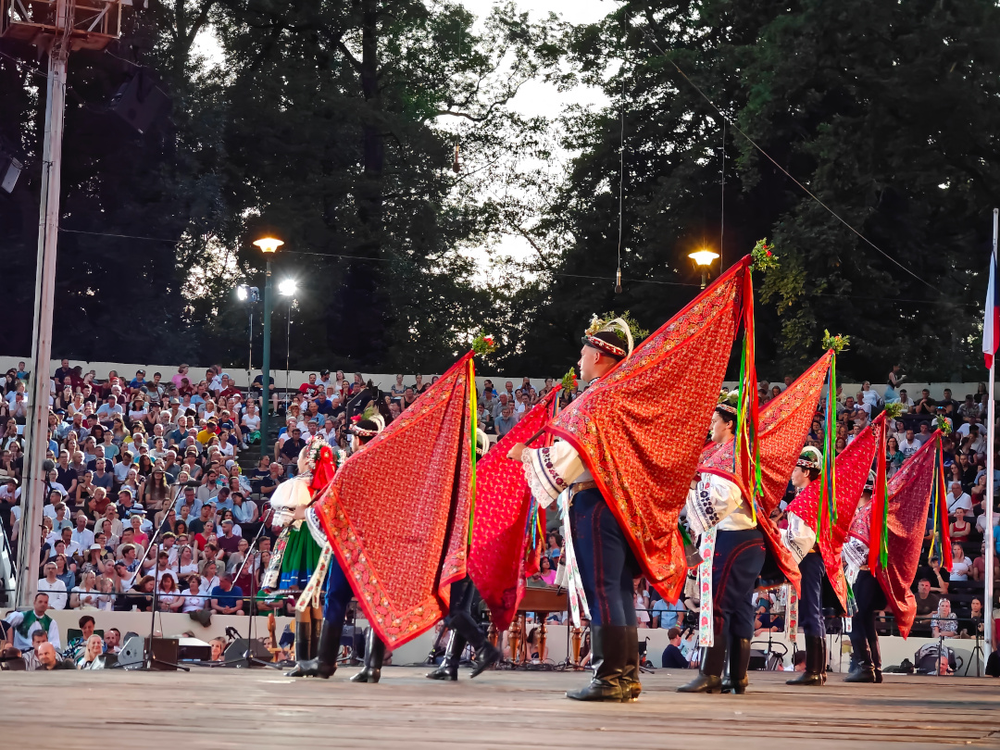
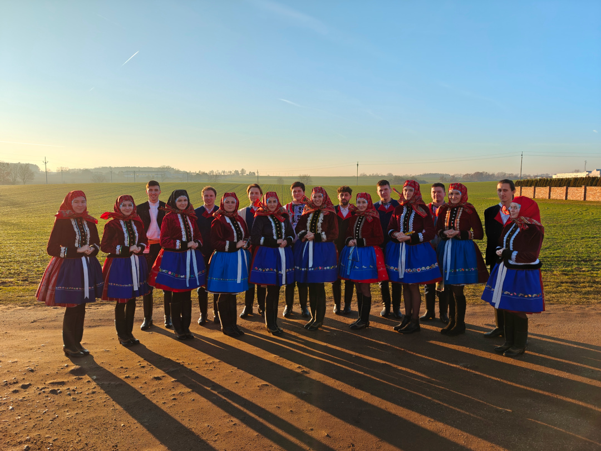
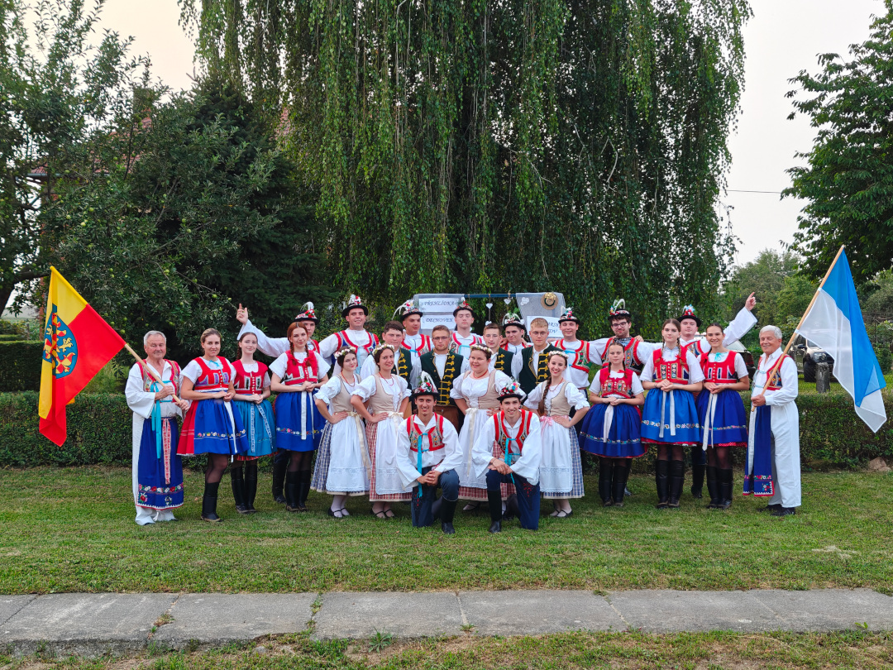
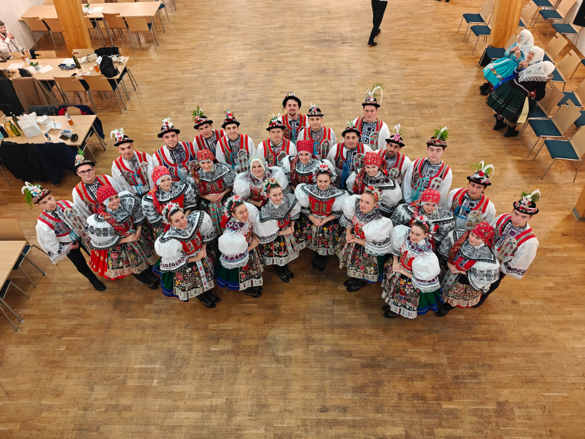
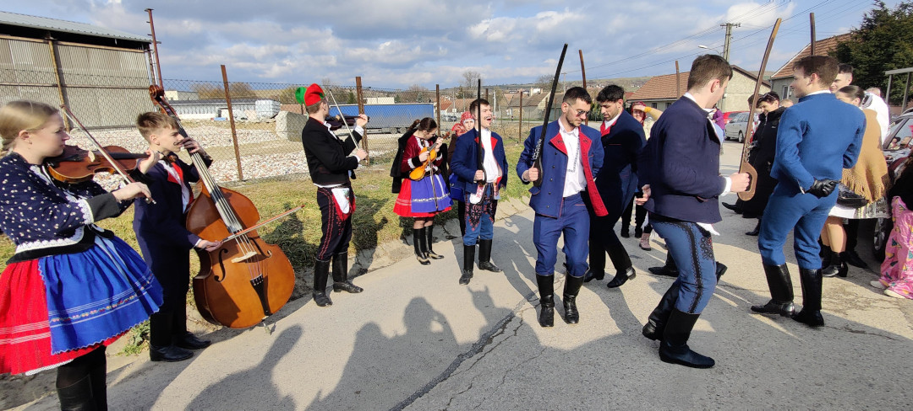
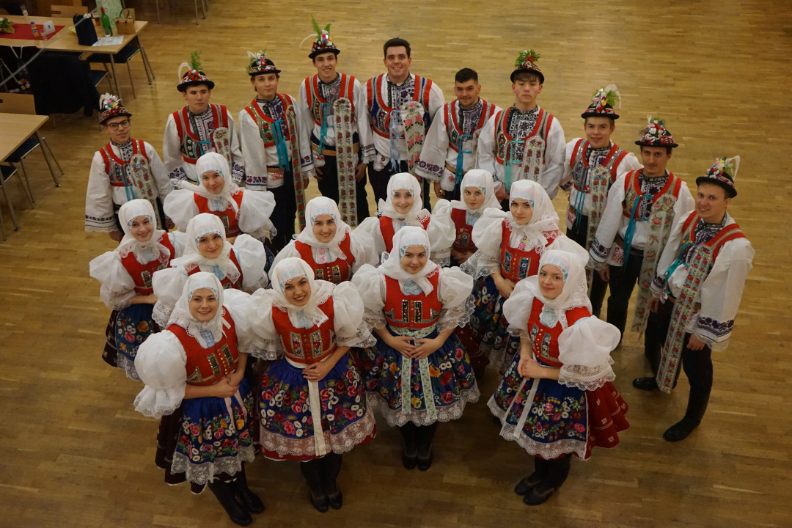

Počátky Folklorního souboru Aldamáš začínají v roce 2023 v Ratíškovicích, kdy se parta mladých lidí se zájmem o folklor, cimbálky, kroje a místní lidové tradice začala scházet aby se naučila tančit skočné, cifrovat verbuňky a zpívat nejrůznější lidové písničky. V roce 2024 jsme se shodli na názvu Aldamáš, což je výraz pro slavnostní přípitek po dobře vykonané práci. V současnosti máme 30 stálých (i nestálých) členů.
Rádi se bavíme u tanců náležících našemu regionu, tedy kyjovskému dolňácku, nepohrdneme však ani klasickým valčíkem či polkou. Snažíme se dodržovat místní lidové zvyky a taky si je náležitě užíváme - krojové plesy, fašaňky, velikonoční obchůzky a samozřejmě vyvrcholení folklorního roku - tradiční krojované hody, pro které už máme připravenu líheň stárků a stárek.






Folklorní soubor Aldamáš, z.s.
Dědina 82, Ratíškovice 696 02
Email: aldamas.fs@gmail.com
Telefon: +420 728 858 226
Facebook: FS Aldamáš